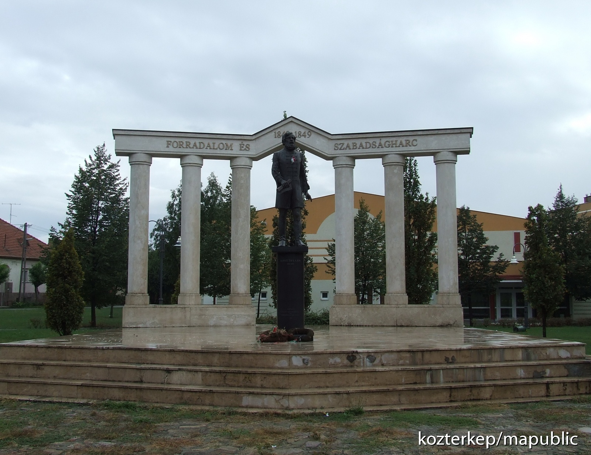

The Battle of Gyöngyös, 1848/49
The Poet of the Hungarian Revolution
Detailed History of the Battle of Gyöngyös
Gyöngyös was a notable location during the Hungarian Revolution of 1848/49. In the winter of 1848, Gyöngyös saw military actions between the Hungarian forces and the Austrian army, marking significant military engagements in central Hungary. The town became a central point of resistance for the Hungarian revolutionaries.
The battle at Gyöngyös demonstrated the determination of the Hungarian army in its struggle against foreign imperial forces. Although the outcome was ultimately not in favor of the revolutionaries, Gyöngyös remains an important part of Hungarian history for its role in the fight for independence.
The Battle of Gyöngyös took place in the later stages of the Hungarian Revolution, during the winter of 1848-1849. Hungarian forces, led by General Klapka, were engaged in a series of skirmishes and battles in central Hungary, trying to fend off the advancing Austrian imperial troops.
The defeat at Gyöngyös was part of a larger pattern of military setbacks that led to the eventual collapse of the Hungarian Revolution. However, the resilience shown by the fighters at Gyöngyös continues to be celebrated as a symbol of Hungarian resistance.
Following the defeat at Gyöngyös, the Austrians continued to push toward Budapest, while the Hungarian revolutionary forces tried to regroup. The outcome of the battle is still commemorated as part of the Hungarian national heritage, reminding people of the valor and sacrifice made during the 1848/49 Revolution.